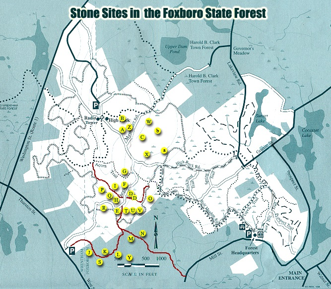

The map below is a scanned copy of the trail map distributed at the Foxboro State Forest Headquarters, Foxborough Massachusetts. Click on the yellow buttons on the map locations indicated, and see photographs and descriptions of the stone structures found there.
Copyright © 2003-2004 by Chuck Drayton
Copyright © 2025 New England Antiquities Research Association. All rights reserved. Some materials are copyright their respective authors. Note that the views expressed here are the opinions of the respective authors and are not the official opinion of NEARA.